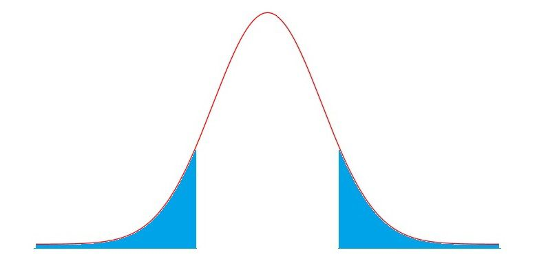
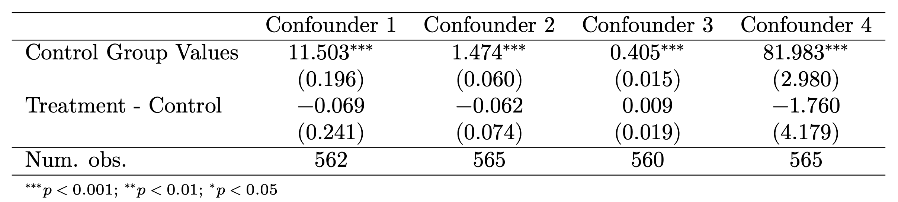

library(tidyverse)
library(fixest)
library(texreg)This chapter discusses the best way of estimating causal effects - randomised controlled trials. We will explore why random assignment is so powerful, how to estimate causal effects with the difference-in-means estimator, and the limitations of randomised controlled trials.
Topics: Random Assignment, Difference-in-Means Estimator, Standard Errors, Hypothesis Testing, Confidence Intervals, Stratified Experiments
2.1: Random Assignment and Confounders
The assignment mechanism is how we decide which observations receive treatment D.
In section 1.6, we discussed how confounder C affects which observations get the treatment, which introduces selection bias.

We can address this confounder C and eliminate the backdoor path D \leftrightarrow C \rightarrow O \rightarrow Y by randomly assigning units into either treatment or control. With random assignment, the randomness determines who gets the treatment, not confounder C:

With random assignment mechanism R, now units are assigned to control randomly, not based on the confounder C. Thus, C and D should no longer be correlated, thus removing the backdoor effect, selection bias, and the influence of confounder C.
Definition: Random Assignment
With random assignment ,selection bias and the influence of confounder C is eliminated. Thus, the control group and treatment group should be similar, as every observation has an equal chance of being selected into either group.
If the control and treatment groups are similar, the potential outcomes should be independent of treatment and control groups:
\bar{y}_{1i, \ D_i = 1} \approx \bar{y}_{1i, \ D_i = 0} \approx \bar{y}_{1i} \quad \text{and} \quad \bar{y}_{0i, \ D_i = 1} \approx \bar{y}_{0i, \ D_i = 0} \approx \bar{y}_{0i}
2.2: Difference-in-Means Estimator for Causal Effects
Since random assignment removes the effect of confounders, that means there is no more selection bias. Thus, we can use the naive estimator (now called the difference-in-means estimator) to estimate the causal effect.
Let us show this mathematically. Recall the naive estimator:
\hat{\tau}_{\text{naive}} = \bar{y}_{1i, \ D_i = 1} - \bar{y}_{0i, \ D_i = 0}
Given the assumption of randomisation, we established in the last section, we know:
\bar{y}_{1i, \ D_i = 1} \approx \bar{y}_{1i, \ D_i = 0} \approx \bar{y}_{1i} \quad \text{and} \quad \bar{y}_{0i, \ D_i = 1} \approx \bar{y}_{0i, \ D_i = 0} \approx \bar{y}_{0i}
Thus, we know the following is true:
\hat{\tau}_{\text{naive}} = \bar{y}_{1i, \ D_i = 1} - \bar{y}_{0i, \ D_i = 0} \quad \approx \quad \hat{\tau}_{ATE} = \bar{y}_{1i} - \bar{y}_{0i}
Thus, our naive estimator (now called the difference in means estimator) estimates the average treatment effect of D on y.
We can rewrite this equation in a nicer, easier to read format:
Definition: Difference-in-Means Estimator
The estimate of the average treatment effect of a randomised controlled trial is:
\hat{\tau}_{ATE} = \bar{y}_t - \bar{y}_c
Where \bar{y}_t is the average y value in the treatment group, and \bar{y}_c is the average y value in the control group.
Thus, the causal effect of D on y is simply the difference-in-means of the two groups.
Or in other words, to calculate the average treatment effect of a randomised experiment, we:
- Calculate \bar y_t, which is done by finding the average y value in the treatment group
- Calculate \bar{y}_c, which is done by finding the average y value in the control group
- Find the difference \bar{y}_t - \bar{y}_c and we have our estimate of the average treatment effect.
Interpretation Warning!
For this estimate of the ATE to be true, there must be random assignment of treatment, and the treatment and control groups must be similar to each other on all confounding variables.
If this assumption is violated (either due to lack of random assignment, or failure of randomisation), we can no longer estimate the causal effects with the difference-in-means estimator.
- This is because if the control and treatment groups are not similar to each other on all confounders, there is the possibility of selection bias in our difference-in-means estimator.
Finally, note that we can also use a different estimator, the OLS estimator (with simple linear regression), to get the same final estimate. We will discuss this in chapter 3.
2.3: Uncertainty in Estimates and Standard Errors
Uncertainty in our Estimates
Remember how we randomly assigned units to treatment or control?
- What if we ran the experiment again?
- The treatment and control groups would very likely not be exactly the same, and thus, we would get a slightly different causal effect.
Thus, we have some uncertainty with our causal estimate - re-running the experiment might result in a different answer. The ATE we have calculated is only our specific sample average treatment effect (SATE), often notated \hat{\tau}_{ATE} or \widehat{ATE}.
- Why sample? Well, through random assignment, you are basically “randomly sampling” potential outcomes - since randomly choosing one unit to be in treatment/control means not seeing the other counterfactual potential outcome.
Thus, we need some mechanism to account for sampling variability and how rerunning the experiment might result in different results. We do this with sampling distributions and standard errors.
Sampling Distribution
Imagine that we take a sample from a population (or some random assignment mechanism). Then, we find the average treatment effect of the sample \hat{\tau}_{ATE}.
That is a sample estimate, which is often notated \hat{\theta}. (I use \hat{\theta}, since this idea of uncertainty can be applied to any estimate, not just average treatment effect).
Then, let us take another sample from the same population (or do another random assignment), and find the sample estimate. This will be slightly different than the first sample, since we are randomly sampling. That is another sample estimate.
We keep taking samples from the same population (more random assignments), and getting more and more sample estimates.
Now, let us plot all our sample estimates \hat{\theta} into a histogram or density plot. The x axis labels all the possible sample estimates \hat{\theta} we have gotten above, and the y axis is how frequently a specific sample estimate occurs.
The result is a distribution, just like a random variable distribution. That distribution is the sampling distribution.
According to central limit theorem, the sampling distribution approximates that of a normal distribu- tion (or t-distribution if our sample size is small). We know that a normal distribution is defined by two parameters - mean and variance.
Standard Errors
Our sampling distribution has a variance, which is basically how spread out the variable is. Variance for a variable x is defined as:
Var(x) = \mathbb{E}[(x_i -\bar{x})^2] = \sigma^2
Standard deviation is the square root of variance.
sd(x) = \sqrt{Var(x)} = \sigma
These formulas are divided by \sqrt{n} when we consider the variability of a sample average.
sd(\hat{x}) = \frac{\sigma}{\sqrt{n}} = \frac{\sqrt{\mathbb{E}[(x_i - \bar{x})^2]}}{\sqrt{n}}
The standard deviation of our sampling distribution is called the standard error of our estimate. Our sampling distribution of \hat{\tau}, if we remember, is a difference-in-means.
Definition: Standard Error for Difference in Means
The standard error is the standard deviation of the sampling distribution. It is often notated se(\hat{\theta}).
The standard error for a difference-in-means is as follows:
\widehat{se}(\hat{\tau}) = \sqrt{ \frac{\sigma_t}{n_t} + \frac{\sigma_c}{n_c} } = \sqrt{ \frac{\mathbb{E}[(y_i - \bar{y})^2 | D_i = 1]}{n_t} + \frac{\mathbb{E}[(y_i - \bar{y})^2 | D_i = 0]}{n_c}}
Where n_t is the number of observations in the treatment group, n_c is the number of observations in the control group.
This standard error tells us the preciseness of our estimates - how much variability is there in our estimates given the random sampling uncertainty.
- We will use the standard error to test if our causal estimates are truly a result of a causal relationship, or just a product of random chance.
2.4: Hypothesis Tests and Causal Inference
Intuition of Hypothesis Tests
We know there is some uncertainty with our sample estimate, as defined by the standard error. So, how do we know if we actually have a causal effect with this uncertainty?
What we do is hypothesis testing: a way to test, given a certain level of uncertainty, whether or not we believe there is a causal effect.
We start off with the status-quo “old theory”, and try to disprove it.
- This is called the null hypothesis, typically notated H_0.
- For causal inference, our null hypothesis is typically that there is no causal effect of D on y. We notate this as H_0 : \theta = 0.
The new theory we are trying to prove is called the alternate hypothesis.
- For causal inference, our alternate hypothesis is typically that there is a causal effect of D on y. We notate this as H_1 : \theta ≠ 0.
We assume that the null hypothesis is true, unless we are 95% confident that we can reject the null hypothesis, and only then, can we accept the alternative hypothesis.
Conducting a Hypothesis Test
We start a hypothesis test by notating our hypotheses:
H_0 : \theta =0 \quad \text{and} \quad H_1: \theta ≠ 0
Next, we have to find a t-test statistic.
Definition: T-test Statistic
The t-test statistic tells us how far our estimate \hat{\theta} is from the null hypothesis value of \theta_0 = 0. This distance is expressed in terms of standard errors of the estimate.
t= \frac{\hat{\theta} - \theta_0}{\widehat{se}(\hat{\theta})}
Note, since \theta_0 = 0, we technically do not need it in the equation. However, sometimes (very rarely), you may have a reason to test a different null hypothesis, so then you would plug in a different value for \theta_0.
After we have a test statistic, we need to consult a t-distribution.
- For a difference-in-means estimator, we should consult the t-distribution with n-2 degrees of freedom (degrees of freedom are the sole parameter of the t-distribution).
Once we have this t-distribution, start from the centre of the t-distribution, and go t-test-statistic number of standard deviations away from the centre towards both directions.
Then, at the point we have ended up, calculate the probability (area under the curve) of a t-test statistic equal or even more extreme could occur (we will not do this manually, the computer will do this). The figure below shows this probability:

The shaded area is the probability of a t-test statistic equal to or even more extreme could occur, given the null hypothesis is true. This is the p-value.
Definition: P-Value
The p-value is the probability of a t-test statistic equal to or even more extreme could occur, given the null hypothesis is true.
If this is less than 0.05 (5%), that means the null hypothesis has a very low chance of being true, so we reject the null hypothesis as no longer true.
So, if the p-value is above 0.05, there is a above 5% chance that the null hypothesis is true. This is too high for our liking, so we cannot reject the null hypothesis, and we cannot conclude any causal effect of D on y.
If the p-value is less than 0.05, there is less than a 5% chance that the null hypothesis is true. In econometrics, we thus reject the null hypothesis, and conclude that there is a causal effect of D on y.
So very simply, if the p-value is less than 0.05, we can conclude that there is a causal effect of D on y. If not, we cannot conclude this.
Thus, the hypothesis test allows us to test if, under uncertainty due to randomisation, if we actually have a causal effect of D on y.
Types of Errors
Of course, with 95% confidence, there is a chance we incorrectly conclude a causal effect. These are called errors. There are two types of errors.
- Type I error, also called a false positive. This occurs when we reject the null hypothesis, even though the null hypothesis is actually true.
- Type II error, also called a false negative. This occurs when we fail to reject the null hypothesis, even though the null hypothesis is actually false.
2.5: Confidence Intervals and Plausible Values of the Causal Effect
With a hypothesis test, we have either concluded that we have, or do not have, a causal relationship between D and y.
However, whether a causal relationship exists or not is not the only thing we care about. We also care about the size/magnitude of the causal relationship.
- After all, if D causes y to increase by 0.000000000001 units, who actually cares? The causal effect might as well not exist.
We have a causal estimate \hat{\theta} = \hat{\tau}_{ATE} already. However, the issue, as we described in section 2.3, is that if we run another random assignment, we will get a slightly different causal estimate.
So how do we account for this issue? We can do this with confidence intervals.
Definition: Confidence Intervals
Confidence Intervals are intervals of plausible true \theta values given our sample estimate \hat{\theta}. We create this interval by adding “buffer” to each side of our sample estimate.
The lower and upper bounds of this 95% confidence interval is:
\hat{\theta} ± 1.96 \widehat{se}(\hat{\theta})
The reason for the 1.96 is that in a normal distribution, 1.96 standard deviations above and below the mean contains 95% of the area under the distribution.
- This can slightly change if our sample size is less than 30, where we will use a t-distribution instead. The computer can help us calculate this.
The 95% confidence interval means that, if we were to run random sample after random sample, 95% of the confidence intervals generated from each sample’s estimates, would contain the true value of \theta.
The “key” thing about confidence intervals is if the interval contains the number 0. This is because if 0 is in the interval, that means 0 is a plausible value of \theta.
- Remember, when \theta = 0, that means there is no causal effect of D on y.
- That means if 0 is included in the interval, we cannot conclude a causal relationship exists between D and y.
- However, we do not need to worry too much about this, since a hypothesis test and a 95% confidence interval give the same results. If a hypothesis test fails to reject the null, 0 will be included in the confidence interval. If a hypothesis test rejects the null, 0 will not be included in the confidence interval.
2.6: Balance Tables to Verify the Assumptions of Randomisation
If the treatment and control groups are not similar (in regard to key confounding variable values), our difference-in-means estimator will be biased with selection bias.
Why is this? Well, if our treatment and control groups are not similar, then the following assumptions will not be met, which are critical in eliminating selection bias:
\bar{y}_{1i, \ D_i = 1} \approx \bar{y}_{1i, \ D_i = 0} \approx \bar{y}_{1i} \quad \text{and} \quad \bar{y}_{0i, \ D_i = 1} \approx \bar{y}_{0i, \ D_i = 0} \approx \bar{y}_{0i}
Thus, we need to be confident this assumption is met.
For researchers, this is especially important, since they need to show that their results are valid. Thus researchers will often show a balance table before or after their estimation process.
A balance table is essentially a table that shows the average difference in values of confounders in both treatment and control groups. For example, below is a balance table:

The key row to look at is the treatment-control row.
- The numbers not in parentheses the difference between treatment and control for the corresponding confounder.
- The numbers in parentheses are the standard errors of the estimated difference.
- Stars (see legend below the table) show significance of a t-test (we will discuss this in the next section).
If no treatment-control for key confounders is significantly different (no stars), then randomisation has suceeded, and indeed, our control and treatment group are similar.
- In the balance table above, there are no stars in the treatment-control row, so our treatment and control groups are similar to each other, and our assumptions are likely to be met.
2.7: Blocking and Stratified Experiments
Blocking, also called stratified experiments, is an extension of randomised experiments to ensure that randomisation does not fail.
Imagine that you have four units in your experiment that you have to assign to treatment/control.
- Their pre-treatment outcomes are y_{0i} = \{2,2,8,8\}.
- This means you have a 1/3 chance of ending up with the random assignment of \{2,2\} in one group and \{8,8\} in another group.
- That would not be good - since clearly the treatment and control groups in that situation would be very different from each other, introducing selection bias.
With blocking/stratified experiments, we can prevent this from happening.
The procedure is as follows:
- Before randomisation, separate your sample of N units into J subgroups
- Within each subgroup, randomly assign units to treatment and control group (essentially, smaller randomised experiments within a bigger experiment).
Example of Blocking
With out previous example of pre-treatment outcomes being y_{0i} = \{2,2,8,8\}, we could divide these observations into J=2 subgroups.
- Subgroup 1 would be \{2, 2\}
- Subgroup 2 would be \{8, 8\}
Then, within each subgroup, randomly assign one observation to control, and the other to treatment.
Thus, we are guaranteed to get at least one unit from each subgroup into both our treatment and control groups, minimising the chance randomisation fails.
To estimate our effects for blocking experiments, we will have to take the weighted average of each subgroup’s average treatment effect (ATE), with the weights being the proportion of units each group accounts for:
\tau_{ATE} = \sum\limits_{j=1}^J \frac{N_j}{N}\tau_j
Where N is the total number of observations, J is the total number of subgroups, j is one of the subgroups, N_j is the number of units within subgroup j, and \tau_j is the ATE of subgroup j.
2.8: Validity and Issues with Randomised Controlled Trials
Randomisation, when it works, is magical - it can help us obtain the best estimates of causal effects that are possible.
But, randomised controlled trials do have several issues that can affect our validity of our estimates and conclusions:
- Failure of randomisation: if for some reason, randomisation does not result in control and treatment groups being similar, we cannot accurately estimate the average treatment effect. Blocking should help us deal with this, but it is still possible for randomisation to fail.
- Non-Compliance: Sometimes, despite assigning certain units to treatment or control, the units do not comply and do the opposite (i.e. people assigned to control still take the treatment). This is a huge issue since researchers are not gods - we cannot force people to take treatment. The biggest threat non-compliance creates is that perhaps, a confounder is causing certain units to be more likely to not comply. We will deal with this issue in the later parts of this book with Instrumental Variables.
- Attrition: sometimes, it is not possible to measure the outcomes of some people in a study, either due to people moving away, passing away, or refusing to answer surveys or have their measurements be taken. This once again is an issue - since perhaps a confounding variable is causing this issue.
However, the biggest issue with randomised controlled trials is the impracticality and infeasability of them in many situations, especially in social science research.
- For example, let us say you want to run an experiment on how democracy affects economic growth.
- It is nearly impossible to randomly assign countries to be a democracy. First, if you assign, for example, Russia to be a democracy, you have no power to make them actually follow through with your study. Second, there are ethical concerns about randomly allocating millions to democracy or autocracy.
Another major issue is that even when experiments are theoretically feasible, they can be too expensive to implement. Randomised Controlled Trials are extremely expensive even when they are possible to run.
Thus, we will need to introduce ways to address for confounders and estimate causal effects for the vast majority of cases where we will not be able to run a randomised controlled trial.
The rest of the part 1 of this course focuses on these techniques. A brief overview of them:
Simple Linear Regression will not be of much use for this, as it typically only is feasible in ideal random situations, however, it is the core that many further methods build on, and can help us explore continuous treatment variables.
Multiple Linear Regression, in theory, can control for confounding variables. However, the limitation of this is that for an accurate estimation, all possible confounding variables (including unobservable or unmeasureable) confounders have to be included to prevent bias, which is very infeasible most of the time.
Instrumental Variables Estimator, in theory, can deal with both non-compliance and confounders, however, there are also drawbacks to this method that we will cover later.
Quasi-experimental methods, like regression discontinuity and differences-in- differences are the most popular methods of causal inference today, and can deal with many of the weaknesses of other approaches.
Maximum Likelihood Estimation deals better than regression with binary outcome variables in some situations, but like regression, all possible confounders have to be included to prevent bias, which is very infeasible most of the time.
Selection on Observables methods including matching, subclassification, and weighting, are excellent in specific situations, but fail to deal with unobservable confounders.
Implementation in R
The packages we will need for this are:
Difference-in-Means Estimator
There are two ways to estimate the difference in means.
First, we can follow the mathematical formula \hat{\tau}_{ATE} = \bar{y}_t - \bar{y}_c by finding the means of the treatment and control group, then finding the difference:
# group by treatment (1 or 0), find mean y
ate <- mydata %>%
group_by(treatment) %>%
summarise(mean = mean(y, na.rm = TRUE), .groups = 'drop')
# that creates a tibble, 1st col is treated status, 2nd col is mean.
# 1st row is treated = 0, 2nd row is treated = 1
#difference
ate[2,2] - ate[1,2]For example:
ate <- dta %>%
group_by(treat_invite) %>%
summarise(mean = mean(pct_missing, na.rm = TRUE), .groups = 'drop')
ate[2,2] - ate[1,2] mean
1 -0.02314737Alternatively, we can use regression to estimate the difference-in-means estimator (which will be covered in the next chapter):
- The argument se = “hetero” tells R to calculate heteroscedasticity-robust standard errors, which will be discussed later in chapter 4. Just know it is standard to do so.
ate <- feols(y ~ treatment, data = mydata, se = "hetero")
summary(ate)For example:
ate <- feols(pct_missing ~ treat_invite, data = dta, se = "hetero")
summary(ate)OLS estimation, Dep. Var.: pct_missing
Observations: 477
Standard-errors: Heteroskedasticity-robust
Estimate Std. Error t value Pr(>|t|)
(Intercept) 0.252106 0.026366 9.561612 < 2.2e-16 ***
treat_invite -0.023147 0.032845 -0.704753 0.48131
---
Signif. codes: 0 '***' 0.001 '**' 0.01 '*' 0.05 '.' 0.1 ' ' 1
RMSE: 0.34285 Adj. R2: -0.001082We can see the output estimate of treat_invite is the same as the example above using the difference-in-means estimator.
Hypothesis Testing in Experiments
For hypothesis testing in R, we use the regression estimator (again, will be covered in chapter 3).
ate <- feols(y ~ treatment, data = mydata, se = "hetero")
summary(ate)For example:
ate <- feols(pct_missing ~ treat_invite, data = dta, se = "hetero")
summary(ate)OLS estimation, Dep. Var.: pct_missing
Observations: 477
Standard-errors: Heteroskedasticity-robust
Estimate Std. Error t value Pr(>|t|)
(Intercept) 0.252106 0.026366 9.561612 < 2.2e-16 ***
treat_invite -0.023147 0.032845 -0.704753 0.48131
---
Signif. codes: 0 '***' 0.001 '**' 0.01 '*' 0.05 '.' 0.1 ' ' 1
RMSE: 0.34285 Adj. R2: -0.001082We can see that the output of treat_invite does not have stars, and its p-value is 0.48131, which is way above the rejection threshold of 0.05. Thus, it is not statistically significant.
- We can also see the t-value is calculated here if you need it.
Confidence Intervals in Experiments
For confidence intervals in R, we first run a regression (see above), then use the confint command:
confint(ate)For example:
confint(ate) 2.5 % 97.5 %
(Intercept) 0.20029633 0.30391487
treat_invite -0.08768618 0.04139144Here in the treat_invite row, we can see the lower and upper bounds of the 95% confidence interval for the difference-in-means estimator.
Balance Tables
(Once again, chapter 3 will make things clearer). To create a balance table, you first run multiple regressions where the output variable is the covariate, and the explanatory variable is the treatment variable. Then, we use the screenreg() funtion or texreg() function to create a balance table.
For example:
m1 <- feols(head_edu ~ treat_invite, data = dta, se = "hetero")
m2 <- feols(mosques ~ treat_invite, data = dta, se = "hetero")
m3 <- feols(pct_poor ~ treat_invite, data = dta, se = "hetero")
m4 <- feols(total_budget ~ treat_invite, data = dta, se = "hetero")
screenreg(l = list(m1, m2, m3, m4),
custom.model.names = c("Village Head Education", "Mosques per 1,000", "Prop. of Households in Poverty", "Total Budget"),
custom.coef.names = c("Intercept", "Treatment"),
digits = 3, include.rsquared = FALSE, include.adjrs = FALSE)
==================================================================================================
Village Head Education Mosques per 1,000 Prop. of Households in Poverty Total Budget
--------------------------------------------------------------------------------------------------
Intercept 11.503 *** 1.474 *** 0.405 *** 81.983 ***
(0.196) (0.060) (0.015) (2.980)
Treatment -0.069 -0.062 0.009 -1.760
(0.241) (0.074) (0.019) (4.179)
--------------------------------------------------------------------------------------------------
Num. obs. 562 565 560 565
==================================================================================================
*** p < 0.001; ** p < 0.01; * p < 0.05We can see we have a balance table here. If you prefer a latex output (which can be put into a document), then change screenreg() to texreg().